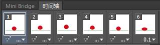
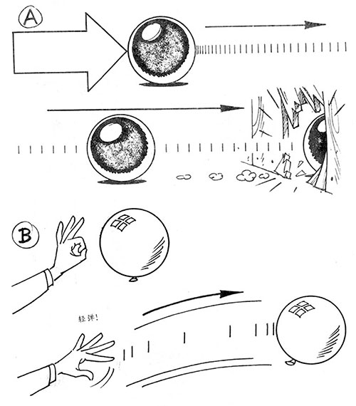
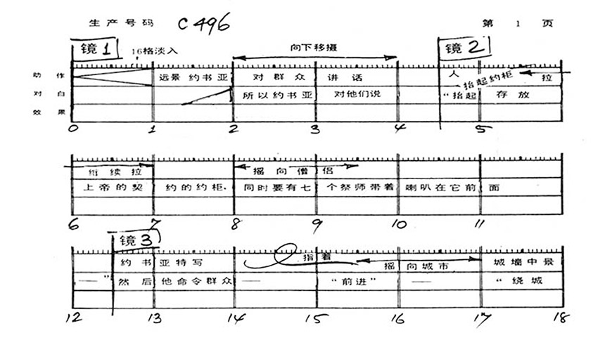
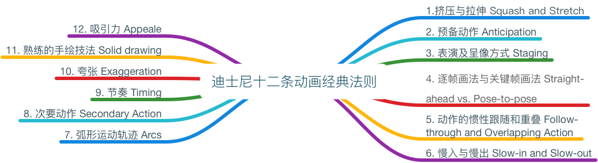
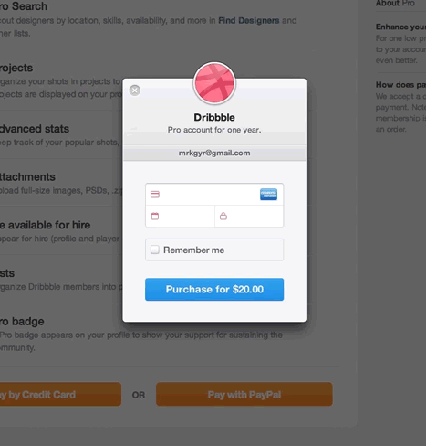
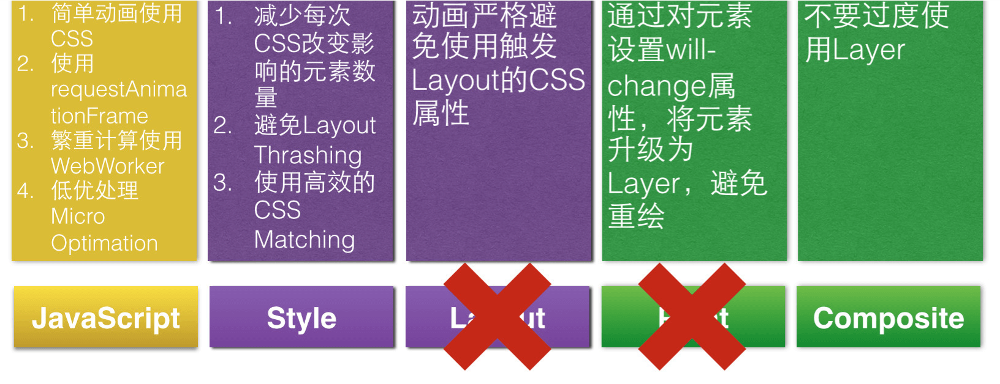

动效开发 6：动效之效
回头看看，我们花了 5 个小节来啰唆「动效开发」的「动」：
- 如何动 —— 第 5 小节《让它动起来》
- 立体地动 —— 第 6 小节《聊一聊 3D》
- 让浏览器帮忙动 —— 第 7 小节《补间动画》
- 一帧一帧地动 —— 第 8 小节《逐帧动画》
- 让 SVG 动 —— 第 9 小节《SVG 动画》
我们花费力气去做的事情毋庸置疑是重要的，但它距离突破也许还差一点别的东西。就好比一个歌手拼命练习各种花式唱法 —— 高音、颤音、延音无所不能，但缺了情感就算不上伟大的歌手。动效开发也是一样的道理，「动」是招式是基本要求，而「效」才是真正的修炼之道。
我们思考动效之「效」，其实就是要思考如何让我们做出来的动画具备最佳的体验效果，它包括两个方面的内容：
- 感官体验 —— 如何「动」得自然、有情感、能吸引人？
- 物理性能 —— 如何「动」得更流畅？
“要写 CSS3 动画，必先学技术。要写好 CSS3 动画，还是得深入探索传统动画的精华。”
—— EC，京东凹凸实验室首席动效开发
对于「如何提升动画的体验效果」这个话题，我们不妨先以电影之眼来看看 CSS3 动画，也许能从中窥得一些门道。
以电影之眼看 CSS3 动画
CSS3 动画的变形基础（transform）包含 4 种变形方式（translate、rotate、scale、skew），同时还可设置 2D、3D、变形原点（transform-origin）、透视（perspective）、透视原点（perspective-origin）等等特性；动画时间轴函数包含 9 种基本模式（ease、linear、ease-in、ease-out、ease-in-out、step-start、step-end、steps），甚至还可以使用 cubic-bezier 写出任何你想要的模式；再加上动画持续时间（animation-duration）等设定，各种排列组合，CSS3 动画简直拥有了整个世界。
（图片源自《动画的时间掌握》）
关键帧与时间轴
根据 维基 的释义，动画是指由许多帧静止的画面，以一定的速度（如每秒 16 张）连续播放时，肉眼因视觉残象产生错觉，而误以为画面活动的作品（GIF 图片正是运用这种原理）。因此最初的动画是通过几张快速翻动的连续画面制作而成，而后经历了电影摄影技术的出现、电脑科技的进步，逐渐转向数字化。
将上面的 GIF 拖入 PS 之后打开时间轴窗口即可看到每一帧的画面：

无论是 2D 还是 3D 动画，关键帧，正如其名，是动画制作中最关键的部分，同时也是最难把握的部分。曾经有位设计师告诉我，在大学的第一节 flash 课的课后作业，老师要求大家上交一份小球动画，包含气球、石球与皮球，并告诉大家，以相同的外观表现出不同的质感是在考验你对关键帧的悟性，而这一个作业就能体现你是否适合学习动画。

A 需要很大的力才能使一个炮弹移动。一旦它移动了，同样需要很大的力才能阻挡它前进。
B 一只气球只需要很小的力去移动它，但空气阻力使它很快停止动作。
这两个例子都画了动作分格线，可以看出在银幕上表现物体的轻重，取决于对它们动作的时间掌握。
——《动画的时间掌握》
在《动画制作流程介绍》提供的视频中可以看到关键帧在动画制作中所起的地基般的作用。
（画面上方的手绘图即为「怪物公司」的关键帧）
与关键帧紧密关联的即为时间轴（或摄制表），时间轴是补齐中间帧不可或缺的一项，在传统动画制作中，导演就是通过制定时间轴来掌控整部动画的节奏的。

（摄制表，图片来源：《动画的时间掌握》）
在 CSS3 中，@keyframes 正是动画的关键帧容器。@keyframes 中包含的包括 transform 在内的元素形态设定构成了关键帧的画面。@keyframes 中的百分比即为时间轴的体现。中间帧则由浏览器自动完成（回顾第 7 小节的补间动画）。
现在我们知道了 CSS3 动画的结构与传统动画之间的关系，重点来了， CSS3 动画可以做出一部动画电影吗？
用 CSS3 动画做一部动画电影
现在就让我们来探讨一下用 CSS3 动画做一部吸引人的动画电影都需要些什么。
首先，你需要一个故事
首先你需要一个故事，即使只是一堆雪花往下掉，也是包含故事的——为什么下雪？是冬天来了？那是冬天的第一场雪吗？第一场雪有什么特点呢？好吧，作为一个从没见过雪的南方人，我承认我给自己挖了个坑，不过就是类似这种思路，让我们拥有了一个故事，所以，即使只有一秒钟的动画也是有故事的。Use your imagination.
小贴士：在做影视题材的专题页时，我会首先根据相关影视的预告片确定入场动画的风格与基调，观看预告片不仅能够了解影片的风格，同时还能学习其字幕出现、消失以及转场的方式，获得一种节奏感，也就是上面所说的时间掌控。在看电影正片时也可留意影片开头与结尾字幕出现的形式，尤其是科幻片，电影字幕的设计与电影风格相辅相成，常常能让你脑洞大开——原来还能这么玩。
[窃听风云3]预告片 中字幕出现的方式表现出信号干扰的效果，由此可以将影片相关专题作出这样的开场动画——
简单的几个不同色调的图片进行替换就能做出类似效果，代码也灰常简单（看 demo）：
@keyframes peoInner{
0%, 12.5%, 16.5%, 20.5% { background:none; }
10%, 12% { background:url(../img_bg/casts_adv_green_red.jpg) no-repeat 0 0; }
14%, 16% { background:url(../img_bg/casts_adv_green_red.jpg) no-repeat 0 -725px; }
18%, 20% { background:url(../img_bg/casts_adv_green_red.jpg) no-repeat 0 -725px; }
13%, 17%, 21%, 100% { background:url(../img_bg/cast_adv_01.jpg) no-repeat top center; }
}
但是，需要注意的是，这种变换 background 的动画方式属于页面性能中的大忌，不建议使用。可使用多个 DOM 结点控制透明度动画来实现同样的效果。
设计关键帧与时间轴
当我们在脑内小剧场构思好动画小故事之后（当然，你也可以将它写下来），我们就可以进行关键帧与时间轴的设计了。
任何人都可以用电脑动画软件将一个物体移动。
但是如何赋予物体重量、大小、规模、移动和幽默感，这些都与你如何移动物体相关。
电脑不能为动画师创造动画，动画师仍然需要了解时间掌握的原则知识以赋予电脑动画生命力。
——《动画的时间掌握》
这时需要注意的是因果关系对动画的影响，“一个动画师必须懂得自然界物体运动的力学知识”，这样“才能创造情绪和表达正确的感觉。” 我们来看看为了使动画更加流畅真实，迪士尼爷爷想出了什么办法。「白雪公主与七个小矮人」作为 80、90 后动画电影启蒙，使用了一项革新动画制作的技术——转描机。
（图片来源：视频 【DizAvenue】制作白雪公主的故事 The Making of Snow White）
迪士尼动画十二原则的运用
视频中有一个细节，迪士尼爷爷让动画师注意那位大叔在跳踢踏舞时重力对裤腿的作用（20 分 20 秒）。是的，迪士尼爷爷强调的就是动画与物理学的关系。
迪士尼工作室在早期，将他们在动画实践中所总结出的规律总结成为了经典的《动画12原则》，可以说这 12 原则就是让迪士尼动画在当时脱颖而出的黄金原则，即便是现如今看来，这 12 原则也并不过时，甚至可以扩展运用至网页交互动效中。

依其第 5 条「动作的惯性跟随和重叠」，我们可以将网页元素看作一个有重量、有结构、有柔韧性的物体进行动画设计，会得到意想不到的效果。事实上已经有人这么做了——
（dribbble’s stripe checkout，图片来源：The Art of Animation）

（图片来源：Giving Animations Life）
在实现过程中，我们可以选择合适的时间轴函数来达成这些效果，或者使用 Bounce.js 这样的弹性动效库，给元素加上弹性动效后，通常能够事半功倍地增加动效的活力与吸引力，但同样的，过犹不及，一切动效的添加都要讲究适度。
对于时间轴函数之贝塞尔曲线的应用，笔者推荐两个工具：贝塞尔曲线在线调试工具 以及 贝塞尔缓动函数库，能够帮助大家快速选取合适的贝塞尔曲线函数。
其第 8 条「次要动作」，在案例《拍拍七夕活动页－七叻个夕》中就得到应用（目前案例已下线），如下图所示：
头花的颤抖的次要动作的加入，不仅衬托得人物的抖动的主要动作更加生动、真实，还令人物情绪的体现更加饱满、感觉更有生命力。
对于这十二条原则的进一步学习，笔者推荐《入门必读！迪士尼影响至今的十二条动画经典法则 》 一文，里面介绍了每条法则的具体内容，必定能让你有所受益。
对动画过渡时间的把握
Google 在 Material Design 指南中提及 动效过渡时间：对于用于交互操作场景的补间动画而言，短动画时间应该控制在 150～200ms，而长动画控制在 300～400ms。而对于用于呈现场景的补间动画则视具体而定，以真实世界为参考标准是最好的。
不断地修改与调整
这是一个需要细致与耐心的过程，你得在不断的调整中保持大局观，避免陷入细节的纠结，同时又需要有能够将别扭的细节调整好的灵感。说白了就是同时拥有汉子的粗犷与妹子的细腻。节奏是一个很重要的因素，与银幕上的动画类似，CSS3 动画创作者的意念必须即时并完全交给观众。
意念清晰易懂靠两个因素：
(1) 好的表现手法和设计，要使每个主要动作能以最清楚和最有效的方式呈现在银幕上。
(2) 好的时间掌握，要有足够的时间先使用户预感到将有什么事情发生，然后用于表现动作本身，最后要有好的收尾。 这三者中，任何一项所占时间太多，便会感觉节奏太慢，用户会感到不耐烦，动画的出现便如同鸡肋。 反之，如果时间太短，那么用户在注意到它之前，动作已经结束，创作者的意念未能充分表达，就浪费掉了。
——《动画的时间掌握》
别忘了性能测试
这是有可能推翻前面两步甚至三步的一个步骤。不过即便发生了这样的事，也不要气馁，这并不意味着之前做的前功尽弃，反而是个宝贵的财富——对于性能的感受又多了一次体验，而其中的一些动画心得或许下次能用上。
别只专注于动画的实现
（动画来源：Pseudo-Elements Animations and Transitions）
这是个使用最简单的 CSS 属性 —— padding、line-height、box-shadow 实现了令人吃了一斤效果的栗子，就像一道脑筋急转弯一样，让大家对 CSS3 动画的理解不止于 CSS3 的新属性，我们曾经用烂的 CSS2.0 属性同样也能开出花儿。然而，这个例子所用的 CSS 属性对于性能的影响并不适用于生产环境。
更高效的 CSS 属性
我们知道，页面渲染的一般过程为 JS > CSS > 计算样式 > 布局 > 绘制 > 渲染层合并，如下图所示：
其中，Layout（重排）和 Paint（重绘） 是整个环节中最为耗时的两环，所以我们应尽量避免使用触发这两个环节的 CSS 属性。
例如，最基本的一个注意点是：使用切换类名的方式来触发动画，而不是使用 diaplay: none 属性值，因为它会引起相关元素的重排和重绘。
除此之外，下面几个属性的替换使用也是值得推荐的：
translate属性替换top/left/right/bottomscale属性换width/heightopacity属性替换display/visibility
笔者这里推荐 CSS Triggers，通过它你可以查阅到各 CSS 属性及其影响的环节，从而避免不小心使用到性能开销较大的属性。
除此之外，对动画渲染的优化还有其他方式，这里抛出 @登平登平 在 《H5 动画 60fps 之路》一文中的总结，同学们可以前往原文进行进一步的学习。

扩展阅读
- 《入门必读！迪士尼影响至今的十二条动画经典法则 》 —— 详细了解迪士尼十二条动画经典法则
- 《让界面动画更自然－ISUX》 —— 如何合理选用动画曲线函数
- 贝塞尔曲线在线调试工具 以及 贝塞尔缓动函数库 —— 帮助你快速选取合适的贝塞尔曲线函数
- The Guide To CSS Animation: Principles and Examples —— 很老的一篇英文文章，以示例的方式介绍了迪士尼的十二条动画法则
小结
我们看到，CSS3 动画并不只是由 transform、opacity 等简单组成，它还可以包含许许多多的设计、想法、甚至感情。「台上一分钟，台下十年功」这句话在动效开发上也适用，或许在所有事物上都适用。
目前为止，用 CSS3 动画拍电影只是个概念，但想象一下你是这部电影的导演，所有元素都是可调度的场景与角色，用 CSS3 动画拍电影是不是也没有那么遥远了？
最后，放上迪士尼爷爷的一段话，在我做动画甚至做任何事时它将不断地在脑海中回响。
曾经有人问迪士尼，「白雪公主」大受欢迎的秘密是什么？他回答说：
“我们只能确定一件事，每一个人都有童年，每次拍一部新片，我们不是为大人而拍，也不只是为小孩子拍，我们是为了唤醒每个人内心深处那种早就被遗忘的纯真世界。”